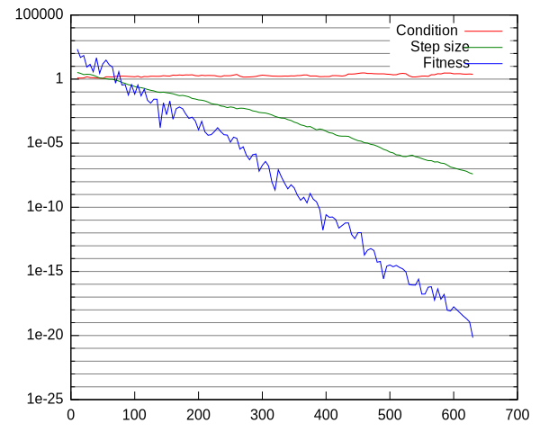

Covariance Matrix Adaptation Evolution Strategy¶
The covariance matrix adaptation evolution strategy (CMA-ES) is one of the most powerful evolutionary algorithms for single-objective real-valued optimization [Hansen2004]. The algorithm relies on normally distributed mutative steps to explore the search space while adjusting its mutation distribution to make successful steps from the recent past more likely in the future. In addition, a separate step-size is maintained and adapted.
In Shark, we provide a reference implementation of the algorithm (see CMA.h) that is integrated with the optimizer class hierarchy. Our implementation is based on the description given in [Hansen2011].
This tutorial illustrates applying the CMA-ES to the Sphere benchmark function. Please note that the methods presented here apply to all single-objective optimizers available in the Shark library. That is, applying an optimizer to an objective function requires the following steps:
Instantiate and configure the objective function.
Instantiate the optimizer.
Configure the optimizer instance for the objective function instance.
Execute the optimizer until a termination criterion is fulfilled.
The code for this tutorial can be found in CMASimple.cpp. First of all, the following header files are required:
// Implementation of the CMA-ES
#include <shark/Algorithms/DirectSearch/CMA.h>
// Access to benchmark functions
#include <shark/ObjectiveFunctions/Benchmarks/Benchmarks.h>
Next, an instance of the objective function is created and configured for a two-dimensional search space:
benchmarks::Sphere sphere( 2 );
Thereafter, the optimizer is instantiated and initialized for the objective function instance:
CMA cma;
cma.setInitialSigma(0.1);// Explicitely set initial global step size.
sphere.init();
cma.init( sphere, sphere.proposeStartingPoint());
Here, we delegate the setup of constants and initialization of the algorithm’s state completely to the implementation. It tries to find a suitable estimate for the internal parameters, namely mu and lambda and also sets a default step size. Nevertheless, the class CMA offers an additional init-method that allows for fine grained control over the initial algorithm configuration. Afterwards we can use the CMA to find a solution which is good enough and print the optimization path:
do {
cma.step( sphere );
// Report information on the optimizer state and the current solution to the console.
cout << sphere.evaluationCounter() << " " << cma.solution().value << " " << cma.solution().point << " " << cma.sigma() << endl;
} while(cma.solution().value > 1E-20 );
In general, the result of an iteration of a single-objective optimizer is a tuple consisting of the best known search point and its associated fitness.
Covariance Matrix Adaptation in Detail¶
In the example above, a very rough overview of the CMA, its implementation in Shark and its application to an example problem has been presented. We now dive into the algorithm in even more detail. For the reminder of the section, we assume the reader to be familiar with the first part of the tutorial. Moreover, we assume an audience that is familiar with the CMA-ES.
The implementation supports different types of weighted recombination. The following table shows the recombination types and the corresponding formulars for the weights:
Recombination type
Weigth calculation
CMA::EQUAL
\(\forall 1 \leq i \leq \mu: w_i = 1/\mu\)
CMA::LINEAR
\(\forall 1 \leq i \leq \mu: w'_i = \mu-i, w_i=\frac{w'_i}{\sum_{i=1}^{\mu} w'_i}\)
CMA::SUPERLINEAR
\(\forall 1 \leq i \leq \mu: w'_i = \ln( \mu + 0.5 ) - \ln( i ), w_i=\frac{w'_i}{\sum_{i=1}^{\mu} w'_i}\)
Empirically Analyzing the CMA-ES¶
In this section, usage of the probe framework for empirical algorithm analysis is illustrated. The code for this part of the tutorial can be found in CMAPlot.cpp.
In this tutorial, results are written to two comma-separated values files, i.e.:
results.txt: Contains the numerical results of executing the CMA.
plot.txt: Contains gnuplot plotting commands for subsequent visualization purposes.
We consider the Himmelblau fitness function (see http://en.wikipedia.org/wiki/Himmelblau%27s_function ). As before, we start over with instantiating und configuring both the optimizer and the fitness function:
benchmarks::Himmelblau hb;
CMA cma;
hb.init();
cma.init( hb );
Next, we iterate the CMA instance until a solution of sufficient quality is found. After every iteration of the algorithm, we extract some values of interest from the value store and write them in an appropriate format to the result files:
results << hb.evaluationCounter() << " " // Column 1
<< cma.condition() << " " // Column 2
<< cma.sigma() << " " // Column 3
<< cma.solution().value << " "; // Column 4
copy(
cma.solution().point.begin(),
cma.solution().point.end(), // Column 5 & 6
ostream_iterator< double >( results, " " )
);
copy(
cma.mean().begin(), // Column 7 & 8
cma.mean().end(),
ostream_iterator< double >( results, " " )
);
results << endl;
Please note that the current solution is not equal to the population mean reported by the CMA instance as the population mean is the result of the recombination operator applied to the respective parent population.
Finally, we present the results of the example in the following plot:
References¶
Hansen and S. Kern. Evaluating the CMA Evolution Strategy on Multimodal Test Functions. In Eighth International Conference on Parallel Problem Solving from Nature PPSN VIII, Proceedings, pp. 282-291, Berlin: Springer, 2004.
Hansen. The CMA Evolution Startegy: A Tutorial, June 28, 2011.


{kind=link}